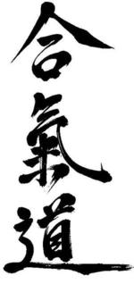

Aikido Aikikai - Stefan Stenudd, 7 dan shihan
search:
×
KOKYUHO against katadori attack
soft throws
IRIMINAGE against shomen uchi striking attack
NIKYO against shomen ate striking attack
SUWARI KOKYUHO (kokyu dosa)
IAIDO, Japanese sword art, in several different kata
IKKYO against many different attacks
JO 31 KATA in four directions, staff exercise
KOTEGAESHI, wrist throw
KOSHINAGE, hip throw
YONKYO
FUTARI DORI (ninin dori), two attackers
TANTO DORI, knife defense - SHIHONAGE
TANTO DORI, knife defense - KOTEGAESHI
TANTO DORI, knife defense - SANKYO
TANTO DORI, knife defense - IRIMINAGE
IRIMINAGE on aihanmi katatedori attack without gripping
KOKYUNAGE on aihanmi katatedori attack
JODORI - kokyunage
IKKYO on shomen ate strike attack
sword against sword - AIKIKEN
jo (staff) against ken (sword) - AIKIBATTO JO
IAIDO, Japanese sword art, in closeups
IAIDO, Japanese sword art demonstration in Malmö, Sweden
nice UKEMI, falling technique
Shoji Nishio sensei 1993 seminar in Malmö, Sweden 1 (5)
Shoji Nishio sensei 1993 seminar in Malmö, Sweden 2 (5)
Shoji Nishio sensei 1993 seminar in Malmö, Sweden 3 (5)
Shoji Nishio sensei 1993 seminar in Malmö, Sweden 4 (5)
Shoji Nishio sensei 1993 seminar in Malmö, Sweden 5 (5)
NIKYO on katadori, shoulder grip
NIKYO on munedori, collar grip
IKKYO - suwariwaza, seated training
IKKYO - hanmi handachiwaza, seated against standing attacker
IKKYO - tantodori, knife defense
IKKYO - tachidori, defense against sword
IKKYO - jodori, defense against jo (staff)
SANKYO - on aihanmi katatedori attack
SANKYO - on gyakuhanmi katatedori attack
SANKYO - on yokomen uchi striking attack
SANKYO - on shomen ate strike attack
Aikido class 1979 in Brandbergen, Sweden, with Stefan Stenudd at age 25
Aikido and aikiken seminar class by Stefan Stenudd
taisabaki on sword attack, TACHI DORI
ATEMI - striking techniques
IKKYO - against resistance and in henkawaza
Qi Chi energy exercise: Correcting shoulders
Qi Chi energy exercise: Pointing
Aikido spirals - a seminar class by Stefan Stenudd
hand movements in IKKYO
hand movements in IRIMINAGE and TENCHINAGE
hand movements in KOKYUHO, KOKYUNAGE, and UDEKIMENAGE
hand movements in KOTEGAESHI
hand movements in NIKYO, SANKYO, and YONKYO
hand movements in SHIHONAGE
blocks/parries against TSUKI, different strike attacks
blocks/parries against different KICKS
techniques against front kick, MAEGERI
IRIMINAGE on gyakuhanmi katatedori attack
IRIMINAGE on a shomen ate striking attack
SUWARI KOKYU HO (kokyu dosa)
aikiken, duo sword exercise, harai yokomen
aikijo, jo (staff) against ken (sword) exercise 1 (of 3)
aikijo, jo (staff) against ken (sword) exercise 2 (of 3)
aikijo, jo (staff) against ken (sword) exercise 3 (of 3)
Iaido - basic mae kata form
Iaido - a variation of the mae kata form
IAIDO, Japanese sword art - ZNKR Seitei Iai kata, all 12 forms
AIKIBATTO, ten sword duo exercises for aikido students
techniques against two attackers, FUTARIDORI (ninindori)
techniques on double shoulder grip attacks, RYO KATADORI
techniques on strike attacks, TSUKI
techniques on attacks from behind, USHIRO
Aikibatto duo sword exercise
Aikibatto, solo iai sword exercise with katana
Aikido demonstration by Stefan Stenudd at the Swedish national aikido seminar 2002
throw UDEKIMENAGE on morotedori (katate ryotedori)
henkawaza - iriminage when uke is resisting shihonage
NIKYO OSAE (pinning) and KOKYUHO (throw) considerations
Aikido demonstration 2002 in Malmö, Sweden: Jonas Dahlqvist and Tomas Ohlsson
Aikibatto Jo - staff against sword exercises for aikido students
Glimpses from the Plzen 2015 aikido seminar with Stefan Stenudd
Stefan Stenudd demo at the 50 years celebration of Swedish aikido
KOKYUHO (Sokumen iriminage) by Stefan Stenudd, 7 dan Aikikai shihan
SHIHONAGE on basic attacks
IRIMINAGE against grip and strike attacks
KOTEGAESHI against grip and strike attacks
YONKYO against grip and strike attacks
TENCHINAGE against grip and strike attacks
Counter techniques, KAESHI WAZA, against aikido techniques
techniques against jo (staff) attacks, JO DORI
NIKYO against grip and strike attacks
KOKYUNAGE against grip and strike attacks
AIKI (joining energies) applications in aikido
My shortest aikido demo ever
SUWARI KOKYUHO (kokyu dosa)
IKKYO and AIKI KEN, sword applications
AIKIBATTO, ten duo sword exercises for aikido students
AIKI KEN, aikido sword: basic irimi (entering) exercises
My 100th video: 45 years of aikido
Centering in aikido
TANTO DORI, knife defense, chudan tsuki KOTEGAESHI
techniques on USHIRO, grips from behind
KEN SUBURI, basic solo sword exercises
SANKYO on strike and grip attacks
HENKA WAZA, changing techniques
合気道合気会

text index:
Stefan_Stenudd.txt
aiki.info
discussion group